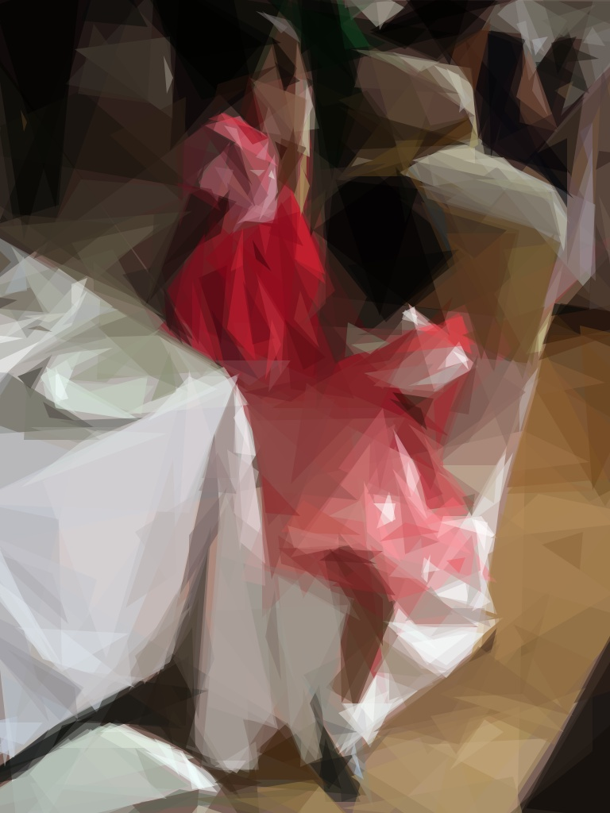
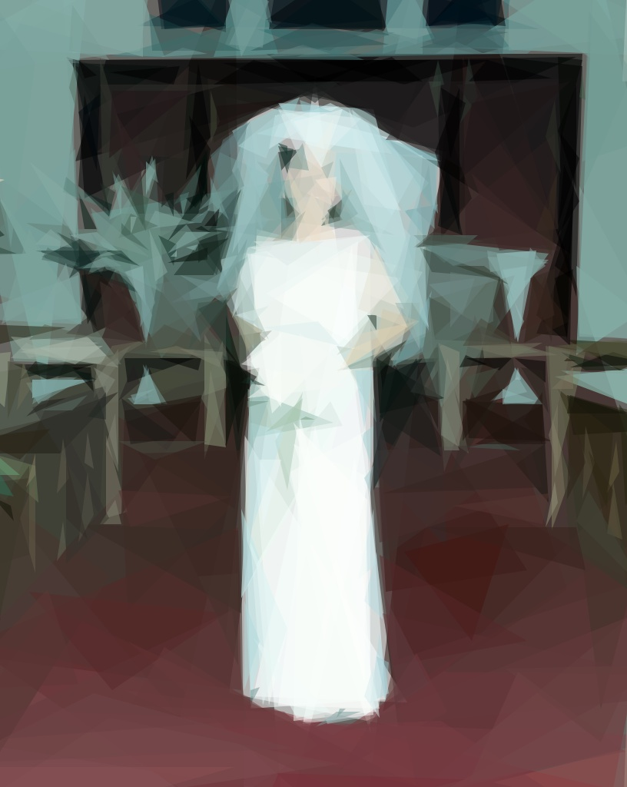
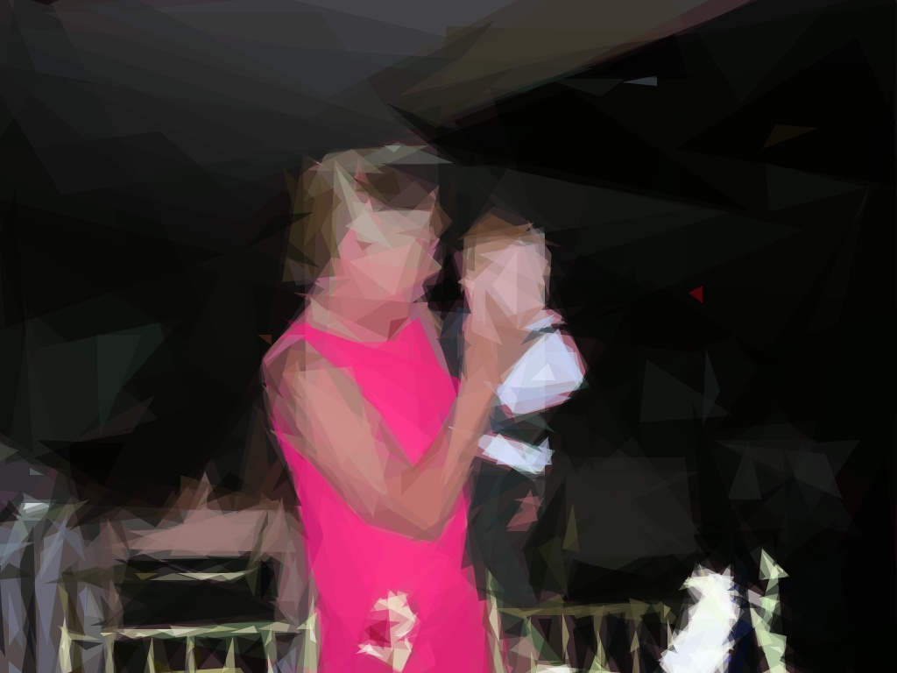

Cinderella
There was once an honest gentle man who took for his second wife a lady, the proudest and most disagreeable in the whole country. She had two daughters exactly like herself in all things. He also had one little girl, who resembled her dead mother, the best woman in all the world. Scarcely had the second marriage taken place, than the stepmother became jealous of the good qualities of the little girl, who was so great a contrast to her own two daughters. She gave her all the menial occupations of the house; compelled her to wash the floors and staircases, to dust the bed-rooms, and clean the grates; and while her sisters occupied carpeted chambers hung with mirrors, where they could see themselves from head to foot, this poor little damsel was sent to sleep in an attic, on an old straw mattress, with only one chair and not a looking-glass in the room.
She suffered all in silence, not daring to complain to her father, who was entirely ruled by his new wife. When her daily work was done she used to sit down in the chimney-corner among the ashes; from which the two sisters gave her the nick-name of Cinderella. But Cinderella, however shabbily clad, was handsomer than they were with all their fine clothes.
It happened that the king's son gave a series of balls, to which were invited all the rank and fashion of the city, and among the rest the two elder sisters. They were very proud and happy, and occupied their whole time in deciding what they should wear; a source of new trouble to Cinderella, whose duty it was to get up their fine linen and laces, and who never could please them however much she tried. They talked of nothing but their clothes.
"I," said the elder, "shall wear my velvet gown and my trimmings of English lace."
"And I," added the younger, "will have but my ordinary silk petticoat, but I shall adorn it with an upper skirt of flowered brocade, and shall put on my diamond tiara, which is a great deal finer than anything of yours."
Here the elder sister grew angry, and the dispute began to run so high, that Cinderella, who was known to have excellent taste, was called upon to decide between them. She gave them the best advice she could, and gently and submissively offered to dress them herself, and especially to arrange their hair, an accomplishment in which she excelled many a noted coiffeur. The important evening came, and she exercised all her skill to adorn the two young ladies. While she was combing out the elder's hair, this ill-natured girl said sharply, "Cinderella, do you not wish you were going to the ball?"
"Ah, madam" (they obliged her always to say madam), "you are only mocking me; it is not my fortune to have any such pleasure."
"You are right; people would only laugh to see a little cinder-wench at a ball."
Any other than Cinderella would have dressed the hair all awry, but she was good, and dressed it perfectly even and smooth, and as prettily as she could.
The sisters had scarcely eaten for two days, and had broken a dozen stay-laces a day, in trying to make themselves slender; but to-night they broke a dozen more, and lost their tempers over and over again before they had completed their toilette. When at last the happy moment arrived, Cinderella followed them to the coach; after it had whirled them away, she sat down by the kitchen fire and cried.
Immediately her godmother, who was a fairy, appeared beside her. "What are you crying for, my little maid?"
"Oh, I wish—I wish—" Her sobs stopped her.
"You wish to go to the ball; isn't it so?"
Cinderella nodded.
"Well, then, be a good girl, and you shall go. First run into the garden and fetch me the largest pumpkin you can find."
Cinderella did not comprehend what this had to do with her going to the ball, but being obedient and obliging, she went. Her godmother took the pumpkin, and having scooped out all its inside, struck it with her wand; it became a splendid gilt coach, lined with rose-coloured satin.
"Now fetch me the mouse-trap out of the pantry, my dear."
Cinderella brought it; it contained six of the fattest, sleekest mice. The fairy lifted up the wire door, and as each mouse ran out she struck it and changed it into a beautiful black horse.
"But what shall I do for your coachman, Cinderella?"
Cinderella suggested that she had seen a large black rat in the rat-trap, and he might do for want of better.
"You are right; go and look again for him."
He was found, and the fairy made him into a most respectable coachman, with the finest whiskers imaginable. She afterwards took six lizards from behind the pumpkin frame, and changed them into six footmen, all in splendid livery, who immediately jumped up behind the carriage, as if they had been footmen all their days. "Well, Cinderella, now you can go to the ball."

"What, in these clothes?" said Cinderella piteously, looking down on her ragged frock.
Her godmother laughed, and touched her also with the wand; at which her wretched thread-bare jacket became stiff with gold, and sparkling with jewels; her woolen petticoat lengthened into a gown of sweeping satin, from underneath which peeped out her little feet, no longer bare, but covered with silk stockings, and the prettiest glass slippers in the world. "Now Cinderella, depart; but remember, if you stay one instant after midnight, your carriage will become a pumpkin, your coachman a rat, your horses mice, and your footmen lizards; while you yourself will be the little cinder-wench you were an hour ago."
Cinderella promised without fear, her heart was so full of joy.
Arrived at the palace, the king's son, whom some one, probably the fairy, had told to await the coming of an uninvited princess whom nobody knew, was standing at the entrance, ready to receive her. He offered her his hand, and led her with the utmost courtesy through the assembled guests, who stood aside to let her pass, whispering to one another, "Oh, how beautiful she is!" It might have turned the head of any one but poor Cinderella, who was so used to be despised, that she took it all as if it were something happening in a dream.
Her triumph was complete; even the old king said to the queen, that never since her majesty's young days had he seen so charming and elegant a person. All the court ladies, scanned her eagerly, clothes and all, determining to have theirs made next day of exactly the same pattern. The king's son himself led her out to dance, and she danced so gracefully that he admired her more and more. Indeed, at supper, which was fortunately early, his admiration quite took away his appetite. For Cinderella herself, with an involuntary shyness she sought out her sisters; placed herself beside them and offered them all sorts of civil attentions, which, coming as they supposed from a stranger, and so magnificent a lady, almost overwhelmed them with delight.
While she was talking with them, she heard the clock strike a quarter to twelve, and making a courteous adieu to the royal family, she re-entered her carriage, escorted tenderly by the king's son, and arrived in safety at her own door. There she found her godmother, who smiled approval; and of whom she begged permission to go to a second ball, the following night, to which the queen had earnestly invited her.
While she was talking, the two sisters were heard knocking at the gate, and the fairy godmother vanished, leaving Cinderella sitting in the chimney-corner, rubbing her eyes and pretending to be very sleepy.
"Ah," cried the eldest sister maliciously, "it has been the most delightful ball, and there was present the most beautiful princess I ever saw, who was so exceedingly polite to us both."
"Was she?" said Cinderella indifferently; "and who might she be?"
"Nobody knows, though everybody would give their eyes to know, especially the king's son."
"Indeed!" replied Cinderella, a little more interested; "I should like to see her. Miss Javotte"—that was the elder sister's name—"will you not let me go to-morrow, and lend me your yellow gown that you wear on Sundays?"
"What, lend my yellow gown to a cinder-wench! I am not so mad as that;" at which refusal Cinderella did not complain, for if her sister really had lent her the gown she would have been considerably embarrassed.
The next night came, and the two young ladies richly dressed in different toilettes, went to the ball. Cinderella, more splendidly attired and beautiful than ever, followed them shortly after. "Now remember twelve o'clock," was her godmother's parting speech; and she thought she certainly should. But the prince's attentions to her were greater even than the first evening, and in the delight of listening to his pleasant conversation, time slipped by unperceived. While she was sitting beside him in a lovely alcove, and looking at the moon from under a bower of orange blossoms, she heard a clock strike the first stroke of twelve. She started up, and fled away as lightly as a deer.
Amazed, the prince followed, but could not catch her. Indeed he missed his lovely princess altogether, and only saw running out of the palace doors a little dirty lass whom he had never beheld before, and of whom he certainly would never have taken the least notice, Cinderella arrived at home breathless and weary, ragged and cold, without carriage, or footmen, or coachman; the only remnant of her past magnificence being one of her little glass slippers;—the other she had dropped in the ball-room as she ran away.
When the two sisters returned they were full of this strange adventure, how the beautiful lady had appeared at the ball more beautiful than ever, and enchanted every one who looked at her; and how as the clock was striking twelve she had suddenly risen up and fled through the ball-room, disappearing no one knew how or where, and dropping one of her glass slippers behind her in her flight. How the king's son had remained inconsolable until he chanced to pick up the little glass slipper, which he carried away in his pocket, and was seen to take it out continually, and look at it affectionately, with the air of a man very much in love; in fact, from his behavior during the remainder of the evening, all the court and royal family were convinced that he had become desperately enamored of the wearer of the little glass slipper.
Cinderella listened in silence, turning her face to the kitchen fire, and perhaps it was that which made her look so rosy, but nobody ever noticed or admired her at home, so it did not signify, and next morning she went to her weary work again just as before.
A few days after, the whole city was attracted by the sight of a herald going round with a little glass slipper in his hand, publishing, with a flourish of trumpets, that the king's son ordered this to be fitted on the foot of every lady in the kingdom, and that he wished to marry the lady whom it fitted best, or to whom it and the fellow slipper belonged. Princesses, duchesses, countesses, and simple gentlewomen all tried it on, but being a fairy slipper, it fitted nobody and beside, nobody could produce its fellow slipper, which lay all the time safely in the pocket of Cinderella's old linsey gown.
At last the herald came to the house of the two sisters, and though they well knew neither of themselves was the beautiful lady, they made every attempt to get their clumsy feet into the glass slipper, but in vain.
"Let me try it on," said Cinderella from the chimney corner.
"What, you?" cried the others, bursting into shouts of laughter; but Cinderella only smiled, and held out her hand.
Her sisters could not prevent her, since the command was that every young maiden in the city should try on the slipper, in order that no chance might be left untried, for the prince was nearly breaking his heart; and his father and mother were afraid that though a prince, he would actually die for love of the beautiful unknown lady.
So the herald bade Cinderella sit down on a three-legged stool in the kitchen, and himself put the slipper on her pretty little foot, which it fitted exactly; she then drew from her pocket the fellow slipper, which she also put on, and stood up—for with the touch of the magic shoes all her dress was changed likewise—no longer the poor despised cinder-wench, but the beautiful lady whom the king's son loved.
Her sisters recognized her at once. Filled with astonishment, mingled with no little alarm, they threw themselves at her feet, begging her pardon for all their former unkindness. She raised and embraced them: told them she forgave them with all her heart, and only hoped they would love her always. Then she departed with the herald to the king's palace, and told her whole story to his majesty and the royal family, who were not in the least surprised, for everybody believed in fairies, and everybody longed to have a fairy godmother.
For the young prince, he found her more lovely and lovable than ever, and insisted upon marrying her immediately. Cinderella never went home again, but she sent for her two sisters to the palace, and with the consent of all parties married them shortly after to two rich gentlemen of the court.